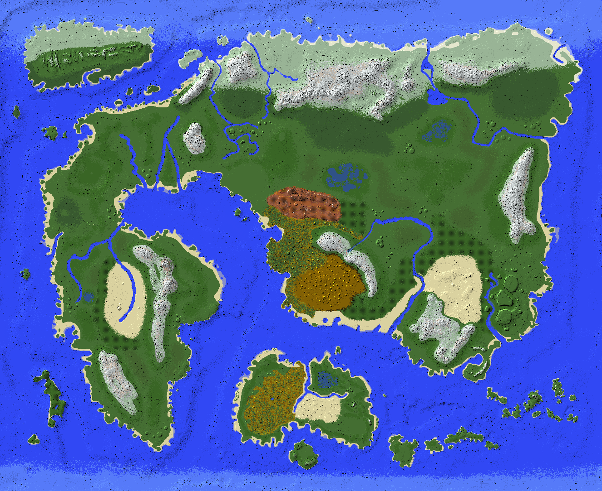

(en construction)(en construction)
(en construction)(en construction)DragonBall NINJIN est un projet de serveur Minecraft en cours de construction. Il est basé sur le mod Dragon Block C de Jynryu. Il s'agit d'un serveur semi-RP francophone, le but étant de se rapprocher un maximum de l'univers de DragonBall décrit dans le manga et anime éponyme. J'essayerai aussi par exemple lors de ce projet de rendre compatible le mod Anti-Gravity pour la planète de Kaio, et aussi de créer quelque mods comme le mod KO et le mod BLOOD&BATH et pleins d'autres trucs encore.

Tout d'abord il vous faut minecraft 1.7.10 avec Forge (Utilisez l'installer et installez pour le client). Ce serveur utilise principalement les mods du site jingames.net. Placez les mods suivant dans votre minecraft (bouton Windows + R, entrez %AppData%, faîtes OK, puis allez dans .minecraft/mods et placez les mods dedans):
Il vous faudra aussi notre mod serveur : ninjinmod-1.7.10-1.0.2.0
Puis vous pouvez rejoindre le serveur via cette adresse IP : 83.193.169.58 ( [!] cette adresse peut changer )
Vous pouvez aussi rejoindre notre serveur discord pour discutez avec nous !
Voici la map du serveur, les dimensions sont 10000x8000 blocks.
Les règles sont encore à définir.